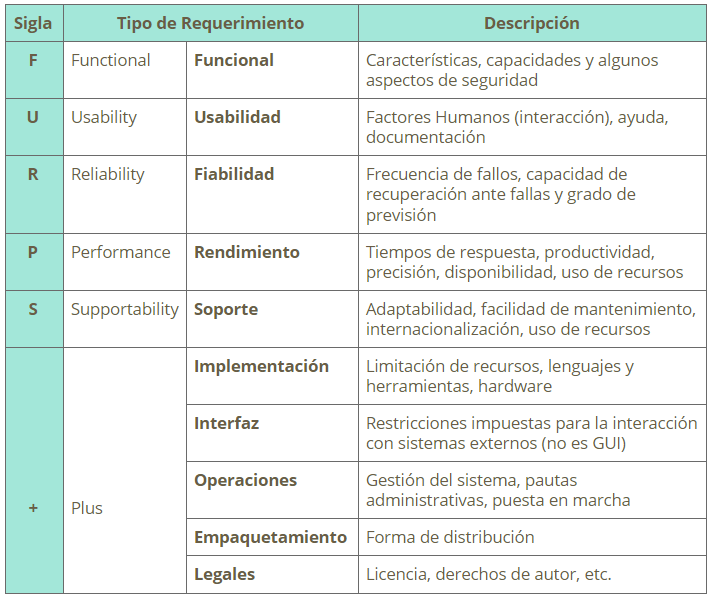
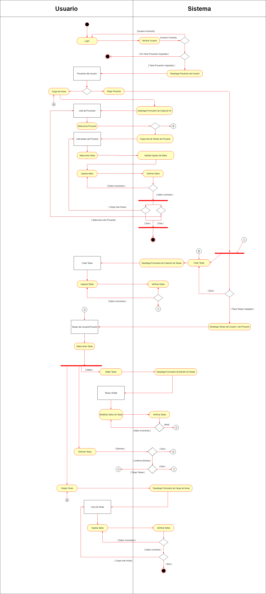

Documentacion version 1.0
Este proyecto es a petición de nuestro cliente (Arkano Software), dada su necesidad de mejorar y acelerar procesos internos dentro de su empresa. Para esto tuvimos algunas reuniones con Adrian Stagno (PM y Director, y uno de los mayores interesados en la gestión de este proyecto) y Virginia Aldasoro (H.R.). De estas reuniones pudimos obtener una idea general del proyecto el cual ellos llaman como “Mundo Arkano” y descripciones de sus principales módulos. Acordamos con el cliente iniciar el proyecto con uno de los módulos que ellos llaman “Arkano Timesheet” el cual tiene una demanda importante dentro de su negocio. Si bien este proyecto es realizado para cubrir las necesidades del cliente el mismo tiene el objetivo de ser Proyecto Final de Carrera.
Actualmente el cliente cuenta con un sistema de facturación, manejo de proyectos y carga de horas asignadas a cada proyecto por parte de los desarrolladores pero este sistema no logra cubrir las necesidades debido a que es lento y engorroso de usar. Esto se ve reflejado en que los usuarios no carguen las horas a tiempo a cada proyecto generando una desincronización entre los pagos/cobros mes a mes a los clientes que factura la empresa. De este problema surge la necesidad de brindar un software performante, ágil y que además funcione en cualquier dispositivo mediante el uso de tecnologías responsive.
Nuestra investigación ataca principalmente las áreas del lenguaje de programación ya que el proyecto se nos fue planteado bastante estructurado por Arkano Software. En las reuniones que se organizaron con el cliente, se nos describió la realidad del negocio así como una idea de cómo el cliente quiere estructurar la aplicación y el contenido de la misma.
Mundo Arkano busca cubrir las necesidades que plantea el cliente en el punto de anterior de problemáticas. Destacamos principalmente el poder llevar la carga de horas y seguimiento del proyecto de forma rápida, sencilla y clara.
Nuestra principal motivación surge de poder aplicar el uso de nuevas tecnologías para dar solución a un problema real de un cliente con el cual convive día a día. El poder interactuar con otros sistemas ya utilizados por el cliente y extraer sus mejores características y dar el valor agregado necesario para suplir sus falencias. A su vez poder hacer extensiva esta solución a otros clientes que puedan tener esta misma dificultad en cuanto a la gestión y seguimiento de sus proyectos brindando la posibilidad de acoplarse a otros sistemas de gestión de proyectos.
Si bien existen un sin fin de gestores de proyecto, ninguno de ellos tiene la posibilidad de customizar el registro de horas y seguimiento del proyecto con tanta especificación como lo desea el cliente final. Arkano Timesheet provee esa especificación al punto de cumplir con la sencillez en el uso y alta adaptabilidad.
Nuestra solución de Arkano Timesheet se basa en:
Dentro de sus principales funciones se destacan:
Como destinatario o beneficiario de Arkano Timesheet identificamos a Arkano Software y a sus empleados directamente, y como beneficiarios indirectos sus clientes, ya que les serán facturados y estimados los proyectos con mayor exactitud.
En cuanto a localización y alcance, determinamos a Arkano Software en primera instancia pero pudiendo en futuro extenderse a más empresas del área u otras áreas, que necesiten una clara herramienta de gestión de sus proyectos. En una primera instancia Arkano Timesheet no pretende ser un gestor de proyectos en sí mismo como otros ya conocidos (Odoo, VSTS, Jira, etc.) pero si una herramienta facilitadora y colaborativa en la gestión del proyecto.
Arkano Timesheet es un sistema cuyo principal objetivo es facilitar, simplificar y dinamizar la carga de horas, seguimiento y administración de las distintas tareas y proyectos que lleva adelante la empresa Arkano Software. El sistema se divide en 3 plataformas. Una aplicación web responsive para la administración de tareas, proyectos y usuarios y su respectiva carga de horas. Una aplicación móvil para la administración de tareas, proyectos y usuarios y su respectiva carga de horas. Una aplicación bot para realizar la carga de horas y listado de horas. Para la obtención y clasificación de los requerimientos del sistema utilizamos la categorización Furps+.
Se identifican los siguientes actores en las 3 plataformas:
El sistema cuenta con las funcionalidades básicas para el registro de horas, administración de tareas y proyectos y reportes con información relevante para el seguimiento de los diferentes proyectos que lleva adelante la empresa.
Utilizamos el modelo FURPS+ que establece cinco características como factores de calidad que son los que le dan
nombre:

El modelo FURPS+ incluye, además de los factores de calidad y los atributos, restricciones de diseño y
requerimientos de implementación, físicos y de interfaz.
Funcional: (Características, capacidades y algunos aspectos de seguridad)
Usabilidad: (Factores Humanos (interacción), ayuda, documentación)
Fiabilidad: (Frecuencia de fallos, capacidad de recuperación ante fallas y grado de previsión)
Rendimiento: (Tiempos de respuesta, productividad, precisión, disponibilidad, uso de recursos)
Soporte: (Adaptabilidad, facilidad de mantenimiento, internacionalización, uso de recursos)
+Plus: Se identificaron las siguientes características complementarias:
Implementación: (Limitación de recursos, lenguajes y herramientas, hardware)
Interfaz: (Restricciones impuestas para la interacción con sistemas externos)
Operaciones: (Gestión del sistema, pautas administrativas, puesta en marcha)
Empaquetamiento:
Legales: (Licencia, derechos de autor, etc.)

You can find the version history (changelog.txt) file on yourthemename-full.zip folder or you can check changelog on theme sale page.
Once again, thank you so much for purchasing this theme. As I said at the beginning, I'd be glad to help you if you have any questions relating to this theme. No guarantees, but I'll do my best to assist. If you have a more general question relating to the themes on ThemeForest, you might consider visiting the forums and asking your question in the "Item Discussion" section.
-----------------------------------------------------------------------------------------
Version 3.8.4 - May 7th, 2015
-----------------------------------------------------------------------------------------
- new revolution slider plugin version
- fixed security issue with xss vulnerability
- improved demo importer for certain server environments
- updated WooCommerce template files for the outdated message in system status
- added suhosin check in system status
- added information that explains ZipArchive is required on your server for importing demos
- portfolio Grid template improvement
- added more information to demo popup message for individual demo requirements
- RTL style improvements
- breadcrumb function improved for various areas
-----------------------------------------------------------------------------------------
Version 3.8.3 - May 7th, 2015
-----------------------------------------------------------------------------------------
- fixed responsive / retina issue for larger logos
- fusion slider now uses responsive headings all the time
- dropped custom Avada styles for select boxes in IE since it is not supported
- fixed compatibility issue with Category Order and Taxonomy Terms Order plugin
- fixed issue of full width background being affected by padding options
- tested and fixed hellobar issue
- typography settings now apply to single post pages
- improved smooth scroll in certain situations
- youtube & vimeo videos will show at normal size in light box as long as video embed link is not used
- fixed issue of “fixed†featured image mode not working for carousels / recent work
- fixed issue of header tagline font not working with font options
-----------------------------------------------------------------------------------------
Version 3.8.2 - May 7th, 2015
-----------------------------------------------------------------------------------------
- fixed formatting issues with Turkish language files
- letter spacing menu option improvement
- improved fusion slider max content width setting
- removed the “disable first featured image on products†setting since it does not apply
- improved portfolio featured image loading
- removed encoding from tracking code, space before head, space before body, and custom CSS to stop it from parsing code within TO and removing special characters e.g. +
- woo login box now shows login fields for logged out users
- woo cart / my account links now show on mobile
- fixed button styling issue with gravity forms
Code released under the Un License License.
For more information about copyright and license check choosealicense.com.